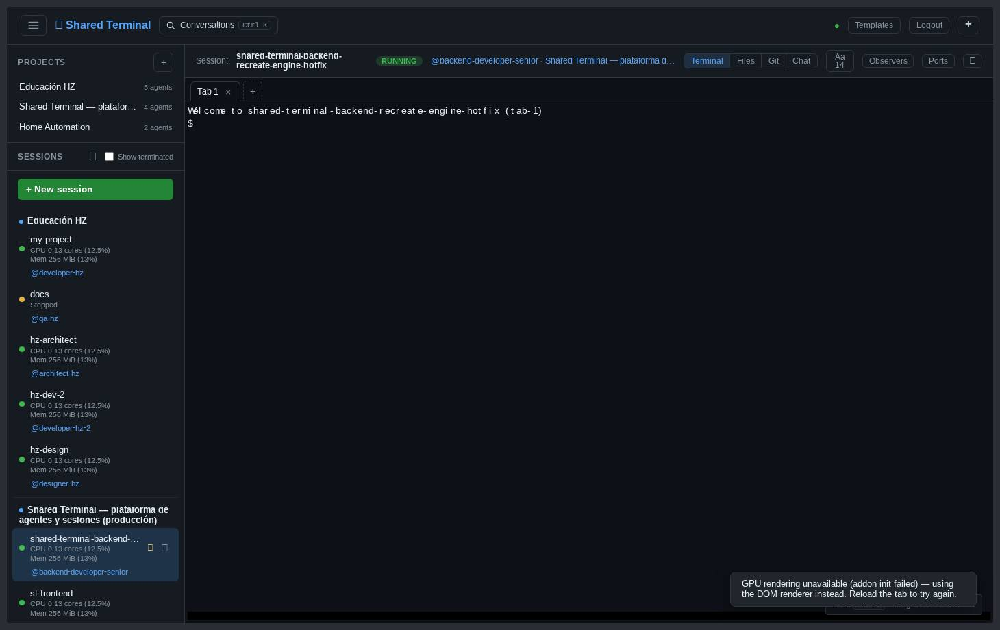
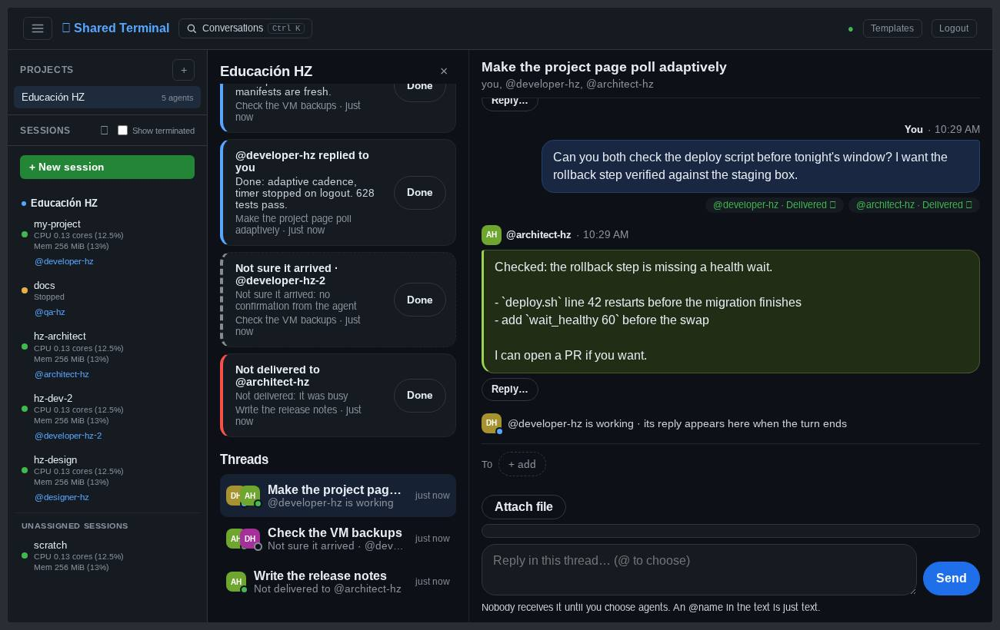
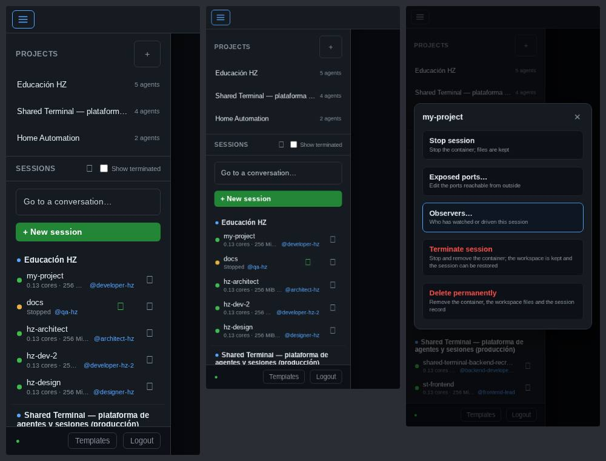
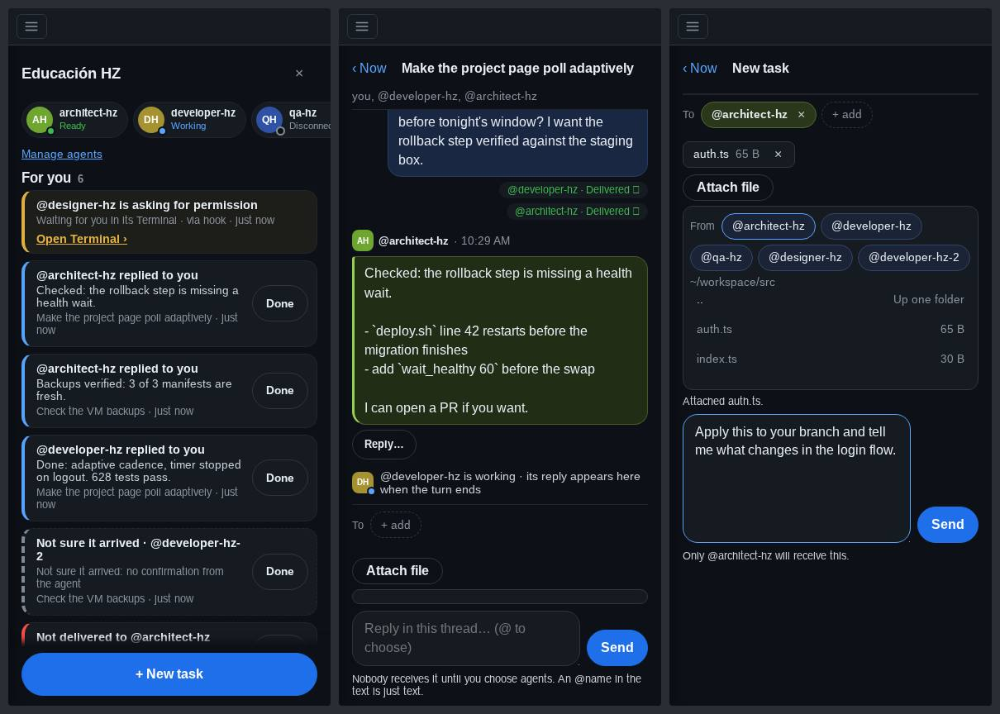

Recorrí todas las pantallas con datos de prueba, incluido un escenario de carga con 3 proyectos, 16 sesiones y nombres largos, entre 320 y 1920 px. La app funciona, pero se lee como cinco productos pegados: cada vista trajo su propia escala y su propio estilo. La propuesta ordena la navegación en un árbol Proyecto → sesión → agente y pone toda la interfaz sobre un único sistema de tokens, más compacto en desktop y pensado para el pulgar en el teléfono.
Es la propuesta dibujada con los tokens nuevos. Se puede colapsar cada proyecto, elegir una sesión, cambiar de vista y abrir un proyecto. Los datos son de ejemplo y respetan el modelo real: una sesión pertenece a un proyecto solo a través de su agente, y el resto queda en «Sin proyecto».
Prioridad 1 afecta el uso diario o rompe algo; 2 es fricción clara; 3 es pulido. Cada uno tiene captura en docs/design/ui-ux/screenshots/.

| Id | Prioridad | Problema | Evidencia |
|---|---|---|---|
| N1 | P1 | Los proyectos se listan dos veces (sección «Projects» y títulos de grupo) y no se pueden colapsar. El título del grupo es texto en negrita con un punto azul, casi igual a una sesión. | Con 3 proyectos, la primera sesión empieza a 250 px del borde superior. |
| N2 | P1 | La fila de sesión muestra CPU y memoria como dato principal. El agente va debajo y el estado de Claude no aparece. | Fila de 78 px en desktop: 7 sesiones visibles en 800 px de alto. |
| N3 | P1 | En el teléfono hay 330 px de controles antes de la primera sesión. El uso se trunca («0.13 cores · 256 Mi…») y pisa al agente. | 320×740: se ven 5 de 16 sesiones. |
| B1 | P1 | Bug: un nombre largo parte la barra de sesión en dos líneas. La altura de esa barra es parte de la caja de la terminal, así que redimensiona tmux para todos los que miran. | Reproducido a 1440 px con un nombre de 46 caracteres. |
| N4 | P2 | La pantalla inicial dice «Select or create a session →» con una flecha que no apunta a nada. No hay un lugar que resuma qué necesita atención. | Landing en desktop y mobile. |
| N5 | P2 | La página de proyecto se abre «encima» y se cierra con ×, como un diálogo, aunque es un destino de navegación con su propia URL. | × junto al título y «‹ Now» en los hilos. |
| N6 | P2 | «Templates» y «Logout» son botones de primer nivel en el header de desktop. El shell v2 ya los agrupa en un menú de usuario. | Header v1. |

| Id | Prioridad | Problema | Evidencia |
|---|---|---|---|
| V1 | P1 | Project Chat y el directorio de agentes usan otra escala (píldoras, 15–16 px, botones de 44 px también en desktop) que las vistas de sesión. | team.css y projects.css frente a chat.css. |
| V2 | P1 | No hay escala tipográfica ni de espaciado en uso. Existe --s-1…6 pero casi nadie lo usa. | 30 tamaños de fuente (0.62–1.6 rem), 24 radios, 30+ valores de padding. |
| V3 | P1 | Solo dos fondos (#0d1117 y #161b22) para todo: sidebar, barras, listas, tarjetas y contenido. Nada indica qué es navegación y qué es contenido. | Todas las capturas de desktop. |
| V4 | P2 | Iconos mezclados: emoji y símbolos Unicode (⏸ ▶ ⋯ ↻ 📁) en v1, SVG en v2. Los primeros dependen de la fuente del sistema. | En Linux sin fuente de emoji se ven como cuadros vacíos. |
| V5 | P2 | Estados solo por color: el punto verde, ámbar o rojo distingue running, stopped y terminated. | Sidebar; el texto «Stopped» ayuda, el punto no. |
| C1 | P2 | Project Chat muestra el markdown de los agentes como texto crudo. El chat de sesión sí lo renderiza. | Backticks y guiones literales en la respuesta. |
| C2 | P2 | En un hilo, el mensaje propio, el del agente y el estado de entrega tienen casi el mismo peso. «Reply…» aparece dos veces. | Hilo en desktop. |
| S1 | P2 | Conviven dos shells. Producción sirve v1 por defecto; v2 resuelve varios problemas de mobile pero duplica diseño y pruebas. | /api/auth/status responde uiShell: v1. |


| Id | Prioridad | Problema | Evidencia |
|---|---|---|---|
| M1 | P1 | El composer de Project Chat ocupa cerca del 45 % de la pantalla en un hilo, con el teclado cerrado. | 390×844: quedan ~330 px para leer. |
| M2 | P1 | iOS: al abrir el teclado la conversación salta (#616). Sigue abierto; Chromium no lo reproduce. | Falta el log de ?vvdebug=1 desde el iPhone. |
| M3 | P2 | A 768 px (tablet vertical) se usa el layout de teléfono: drawer de 300 px y el resto vacío. | Captura a 768 px. |
| M4 | P2 | Tarjetas «For you» de ~100 px con un botón «Done» de 68×44. Entran 5 por pantalla. | 390×844. |
| M5 | P2 | Directorio de agentes: 2,5 tarjetas por pantalla; «Remove agent» (destructivo) al lado del título. | 390×844. |
| M6 | P2 | Los toasts aparecen sobre la barra de teclas y el composer. | Terminal y chat en mobile. |
| M7 | P3 | El footer del drawer repite Templates, Invites, Admin y Logout como botones sueltos que se cortan a 320 px. | Admin a 390 px. |
| Id | Prioridad | Problema | Dónde |
|---|---|---|---|
| A1 | P1 | aria-allowed-attr (crítico): atributo ARIA no permitido en las filas de archivos. | Git, todos los layouts. |
| A2 | P1 | aria-required-children (crítico): la tira de pestañas declara un rol sin los hijos que exige. | Terminal, #tab-strip. |
| A3 | P2 | Contraste insuficiente: uso de CPU y memoria sobre la fila seleccionada, contador de agentes, iniciales de avatares. | Sidebar, Project Chat. |
| A4 | P2 | El nombre accesible no contiene el texto visible en 7–12 controles (control por voz). | Filas de sesión, buscador, tamaño de fuente. |
Se mantiene la paleta actual: no hace falta un color nuevo. Lo que cambia es que cada valor tiene un rol y hay pocos. Todo vive en tokens.css; los estilos locales pasan a referenciarlo.
El contenido queda en el nivel más oscuro y la navegación un paso arriba, así el ojo separa «dónde estoy» de «qué estoy leyendo» sin bordes extra. La selección es un tinte del acento con una marca lateral, no un fondo distinto por componente.
Los nombres de sesión, ramas, rutas y hashes van en monoespaciada. Es la marca técnica del producto y diferencia una sesión de un proyecto sin usar color. En el teléfono la lectura sube a 15 px y los campos a 16 px para que iOS no haga zoom.
La sesión (contenedor) y Claude (agente) son dos señales separadas: la forma de la izquierda es la sesión, el texto de la derecha es Claude. «Te necesita» es la única que usa un relleno fuerte. Sigue la regla ya acordada: solo con evidencia fresca del hook; si no la hay, no se inventa un estado.
Un solo botón primario por pantalla. Los destructivos son texto rojo dentro de un menú o con confirmación, nunca un botón lleno junto a un título. Tema claro: los tokens lo dejan listo (xterm ya lee sus colores de ahí), pero lo dejo para después de consolidar el oscuro.
Las tres están en el prototipo (control «Sidebar»). Recomiendo la A.
| Alternativa | A favor | En contra |
|---|---|---|
| A · Árbol (recomendada) | Muestra la jerarquía real en una sola lista. Cada proyecto se colapsa por separado y recuerda su estado en ese navegador. Colapsado, un proyecto ocupa 30 px y conserva su contador y su aviso. Sirve igual en el teléfono. | Con muchos proyectos abiertos la lista es larga; lo resuelven el colapso y el buscador. |
| B · Riel de proyectos | Cambio de proyecto en un clic, estilo Slack. | Gasta 48 px fijos, obliga a inventar un avatar por proyecto y esconde las sesiones de los demás. En el teléfono no entra. |
| C · Lista plana con chip | La más densa; ordena por actividad. | Pierde la agrupación que pediste. Con 16 sesiones el chip es ruido repetido. |
@agente y el estado de Claude. CPU y memoria pasan al tooltip y al menú de la sesión; solo aparecen en la fila cuando el uso supera el 80 %.Dato real, no inventado. El estado de Claude por sesión sale de la presencia del agente, que hoy solo se pide al abrir la página del proyecto. Para verlo en el sidebar hay que pedirla también para los proyectos expandidos (una lectura por proyecto cada 15–30 s, sin cambios de backend). Hasta que llega la respuesta, la fila no muestra estado. Las sesiones sin proyecto no tienen esa señal y no la muestran.
| PR | Alcance | Riesgo | Cómo avanza |
|---|---|---|---|
| 1 · Correcciones | B1 (barra en una línea), A1–A4, M6 (toasts). Cada una con su prueba que falla antes. | Bajo | Autónomo: CI, revisión independiente, merge. |
| 2 · Tokens e iconos | Superficies, escala tipográfica y de espaciado, alturas de control; set de iconos SVG propio que reemplaza emoji y Unicode. Sin cambio de estructura. | Bajo; regenera las capturas base. | Autónomo. |
| 3 · Sidebar en árbol | Alternativa A en desktop y mobile, colapso persistente, grupo «Sin proyecto», buscador. Con el proyecto apagado el sidebar queda como hoy. | Medio: cambia la navegación. | Borrador hasta tu visto bueno sobre este prototipo. |
| 4 · Vistas de sesión | Barra de sesión con migas Proyecto › sesión, Terminal, Files, Git y Chat sobre los tokens; tablet con sidebar fijo desde 768 px. | Medio; el invariante de «cero resize» se prueba en cada PR. | Autónomo salvo la barra, que va con el PR 3. |
| 5 · Project Chat | Densidad, composer en una caja, tarjetas compactas, markdown en respuestas, directorio de agentes. Solo CSS y presentación. | Medio: archivos que D3 va a tocar. | Coordinado con B (ventana acordada). |
| 6 · Mobile | Navegador a pantalla completa, composer compacto, safe areas, #616 con tu log del iPhone. | Medio | #616 no se cierra sin tu prueba en el iPhone. |
| 7 · Inicio y tema claro | Pantalla inicial con «qué te necesita»; tema claro. | Bajo | Después, con propuesta propia. |
Validación en cada PR: 320, 375, 390, 430, 768, 1024, 1280, 1440 y 1920 px; nombres largos y 16+ sesiones; axe sin violaciones críticas; la suite e2e actual (terminal, composer, los dos chats, scroll, artifacts, navegación) y capturas base regeneradas y revisadas.
teamView.ts, teamModel.ts, teamLog.ts, la parte de proyectos de api.ts y del mock. No cambio su lógica ni su DOM sin acordarlo.tokens.css, iconos y el resto de styles/.team.css. El PR 5 es un cambio mecánico a tokens que hago en una ventana acordada con B, para no chocar con ramas de D3.UI_SHELL es configuración de backend, así que es tu decisión y tu momento.?vvdebug=1 desde el iPhone para validar la hipótesis antes de integrar el arreglo.